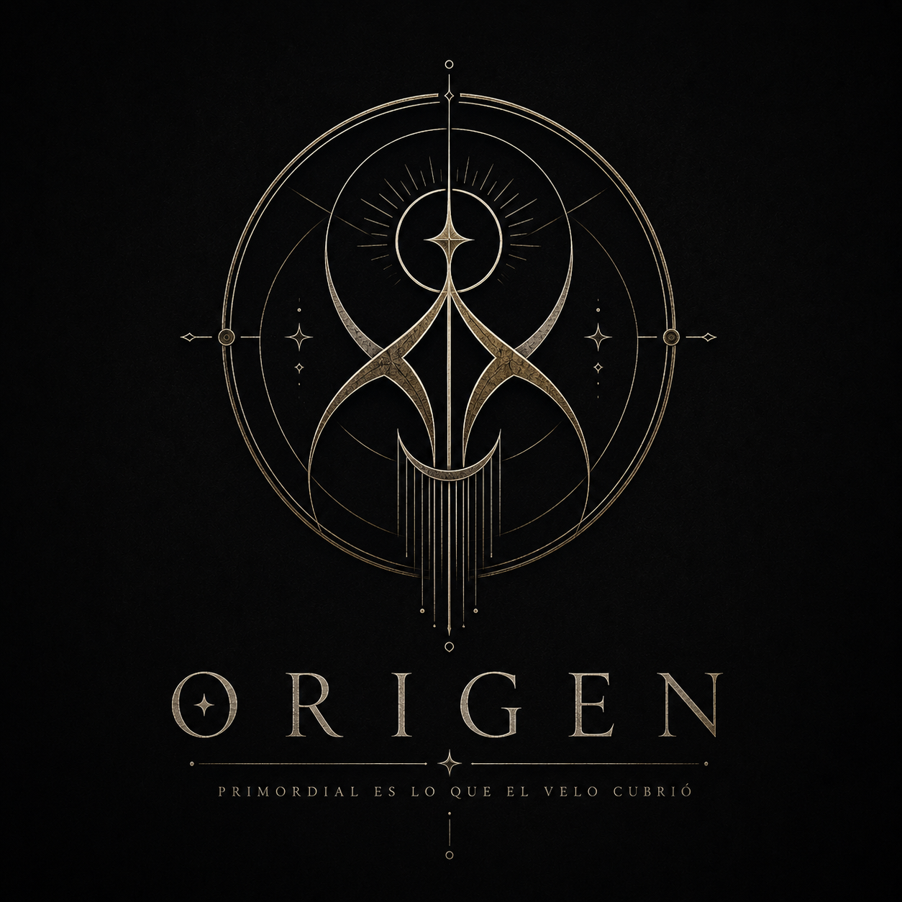

Organización · Lunaterra
Origen
Custodes Originis
Antigua organización dedicada a descubrir el origen de las competencias que, corrompida por su obsesión con el conocimiento y el control, terminó buscando crear un nuevo orden.
- Nombre
- Origen
- Nombre antiguo
- Custodes Originis
- Tipo
- Organización
- Fundación
- Información pendiente
- Fundadores
- Información pendiente
- Sede
- Origen
- Estado
- Activa

Origen, los Custodios del Origen —Custodes Originis—, anteriormente conocido como el Clan Eternum, es una organización cuya historia se pierde mucho antes de que existieran los primeros registros de Bastión. Durante siglos, sus miembros se dedicaron a estudiar aquello que se encontraba en los límites de lo conocido. Su nombre no hacía referencia únicamente al origen de los poderes, sino a una pregunta mucho más antigua:
¿De dónde procede todo aquello que no debería existir?
Los primeros documentos encontrados hablan de los Custodios como investigadores, estudiosos y guardianes de conocimientos que el resto del mundo había olvidado. Conservaban manuscritos, estudiaban las primeras manifestaciones de las competencias y buscaban comprender la naturaleza de las brechas, quizá para controlarlas o para poder crearlas. Nadie sabe exactamente cuándo cambió todo. Algunos registros sostienen que los Custodios descubrieron algo que no estaban preparados para comprender. Otros aseguran que siempre supieron más de lo que estaban dispuestos a contar.
Durante mucho tiempo, Origen fue una de las organizaciones más importantes. Pero entonces Bastión comenzó a crecer y, con el crecimiento, llegaron las comparaciones. Los Guardianes comenzaron a ganar miembros, recursos y reconocimiento. Allí donde Bastión levantaba sus muros, Origen quedaba cada vez más relegada a las sombras. Lo que había comenzado como una rivalidad silenciosa fue convirtiéndose poco a poco en algo mucho más peligroso. La envidia les empezó a corromper. Los Custodios comenzaron a preguntarse por qué Bastión debía ser quien protegiera Lunaterra, por qué ellos, que habían estudiado aquellos fenómenos mucho antes, debían permanecer detrás de quienes ahora se llevaban el reconocimiento.
Y, poco a poco, dejaron de buscar únicamente respuestas.
Empezaron a buscar una forma de superar a Bastión. Fue entonces cuando nació el Hidrasma y, con ello, una corriente dentro de la propia organización que comenzó a rendir culto a seres superiores que consideraban alienígenas, camuflados entre los humanos y capaces de otorgar a otras personas los poderes adquiridos por estos seres, estableciendo así un nuevo orden mundial.
Un proyecto destinado a crear aquello que Origen consideraba necesario para recuperar su posición: niños prodigio, personas capaces de desarrollar competencias extraordinarias y cuyo potencial pudiera ser controlado y perfeccionado desde el principio. Lo que comenzó como un intento de comprender por qué determinadas personas nacían con capacidades excepcionales terminó convirtiéndose en algo mucho más oscuro.
Niños convertidos en sujetos de estudio. El talento convertido en experimento. La búsqueda del conocimiento sustituida por la obsesión de crear algo superior.
El propósito original de Origen comenzó a desaparecer lentamente, enterrado bajo generaciones de decisiones cada vez más difíciles de justificar. Lo que una vez se había formado para comprender y proteger la verdad empezó a corromperse por el deseo de controlarla. Y cuanto más crecía Bastión, más lejos parecía quedar Origen de aquello que había sido en sus comienzos.
Solo una organización que todavía decía buscar el origen de todas las cosas, aunque hacía mucho tiempo que había olvidado por qué había comenzado a buscarlo.
Origen no nació como aquello que hoy se conoce, sino que se convirtió en ello, poco a poco, decisión tras decisión. Hasta que la necesidad de comprender la verdad terminó siendo reemplazada por algo mucho más peligroso:
la necesidad de poseerla.